Do catálogo da empresa ao anúncio revisado, em escala.
O MLA organiza a base de produtos do lojista, prepara anúncios por marketplace e por conta e automatiza o preenchimento no navegador, sempre com a sua aprovação antes de publicar.
- Versão 0.1.0 + Catálogo Mestre Inteligente
- 178 testes automatizados
- Validação de out/2026: 78 verificações aprovadas
- Publicação real no Mercado Livre e Shopee em desenvolvimento
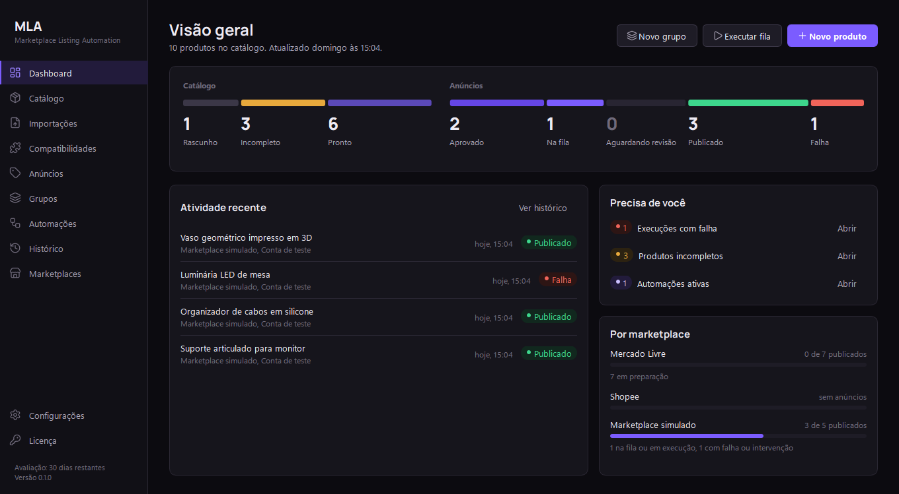
O problema
Vender o mesmo produto em vários marketplaces e contas multiplica o trabalho e os erros.
Base espalhada
Planilhas do ERP, XML, PDFs de fornecedores e pastas de fotos, cada um com nomes de colunas diferentes.
Dados divergentes
SKUs, preços e estoques diferentes entre canais, sem saber de onde veio cada informação.
Compatibilidades sem fonte
Aplicações em veículos e aparelhos anotadas sem origem, misturando fatos e suposições.
Publicação repetitiva
Adaptar título, preço e imagens para cada conta e publicar à mão é lento e arriscado.
Funcionalidades implementadas
Tudo nesta seção funciona no aplicativo hoje e é coberto por testes automatizados.
Catálogo mestre inteligente
Um cadastro único do produto físico, separado dos anúncios.
- SKU principal e de variações, código do fabricante, GTIN/EAN com dígito verificador conferido.
- Custo, preço de venda e promocional, estoque mínimo, unidade, situação comercial.
- Descrição técnica, especificações, atributos personalizados, arquivos técnicos e mídias pendentes.
- Busca por SKU de variação, GTIN, fabricante ou fornecedor; listas grandes carregadas aos poucos.
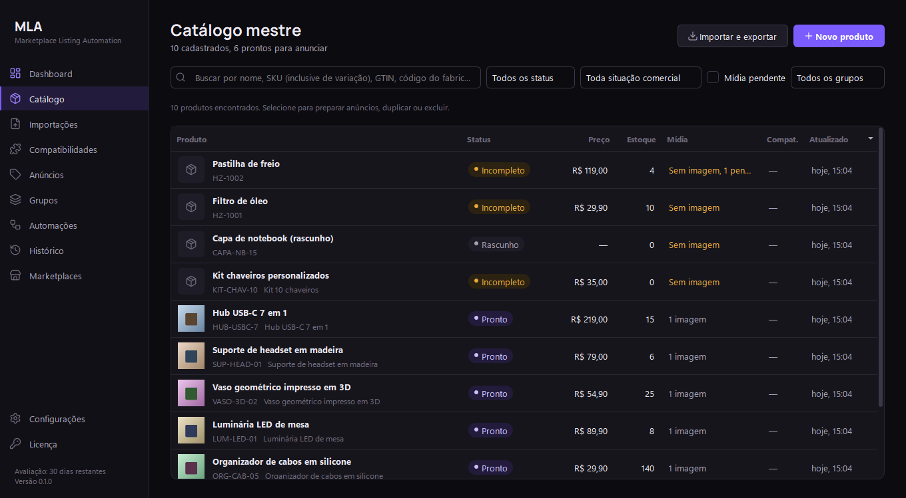
Central de Importações
CSV, XLSX, JSON, XML, PDF (tabela ou ficha técnica), ZIP com planilha e fotos e pastas de imagens.
- Colunas reconhecidas automaticamente; nomes ambíguos exigem confirmação; modelos reutilizáveis.
- Validação por linha, duplicatas, variações ligadas ao SKU pai, imagens associadas por nome ou SKU.
- Cada alteração mostrada como “atual → arquivo”; criar, atualizar ou ignorar.
- Nada é gravado antes da confirmação; cancelar não altera o catálogo; relatório por linha.
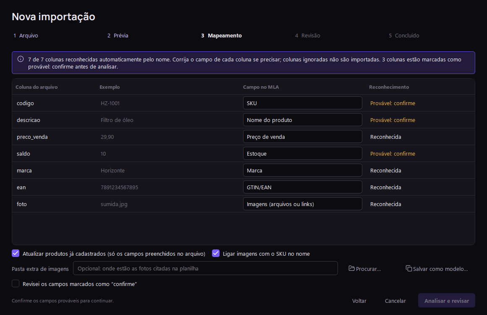
Compatibilidade de produtos
Marca, modelo, versão, anos, equipamento e código de referência, sempre com a fonte. Dados do cliente entram como confirmados; fabricante e fontes externas, como não verificados. Nada é inferido.
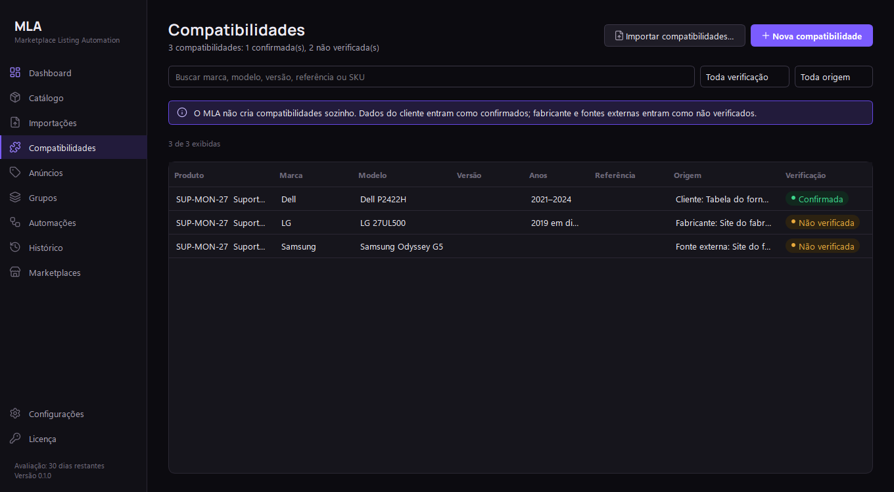
Preparação de anúncios por marketplace e conta
Um produto gera um anúncio por conta, guardando só o que muda: título, descrição, preço, estoque, categoria, atributos e imagens. Estados claros do rascunho à publicação confirmada, aprovação desfeita se o conteúdo mudar e nota de completude calculada sem IA.
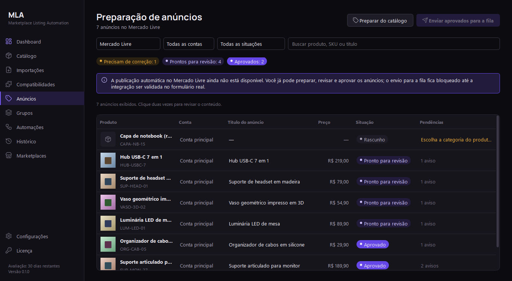
Marketplaces e contas
Várias contas por marketplace, conta padrão, URL do vendedor validada pelo domínio oficial, perfil independente do Edge para cada conta (nunca o navegador pessoal) e teste de conexão com login manual.
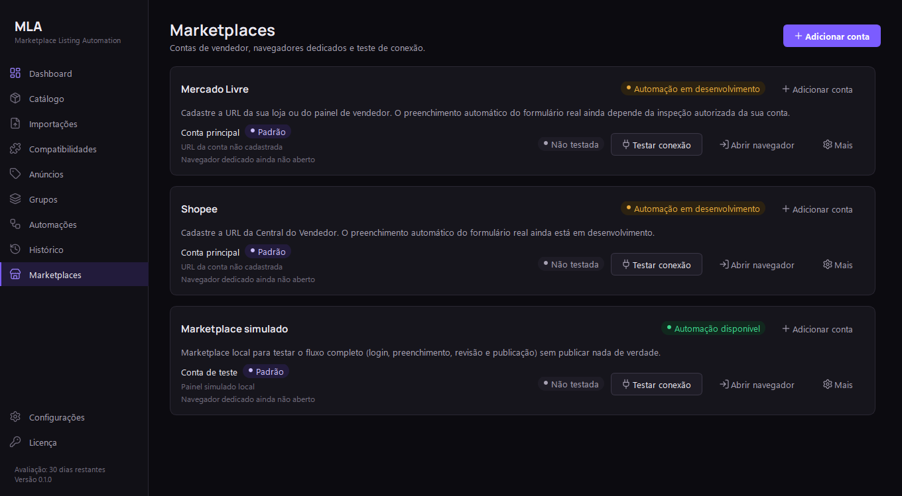
Automação com revisão humana
Fila persistente, pausa, retomada, recuperação após fechar o app, prevenção de duplicados, capturas de cada etapa e aprovação antes de publicar. Execução individual, em grupo ou em lote.
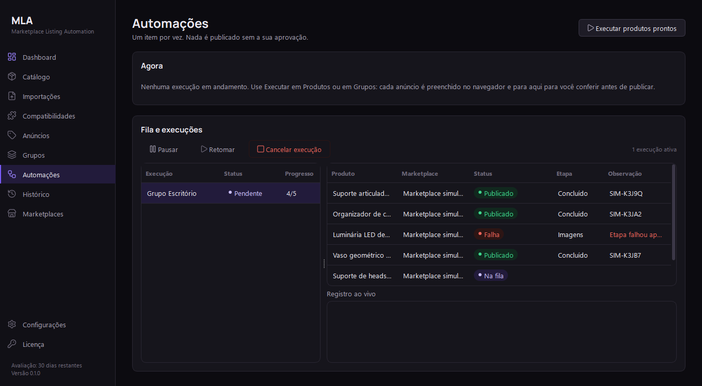
Dashboard com indicadores
Pipeline do catálogo e dos anúncios, pendências que precisam de você e situação por marketplace.
Histórico, backup e logs
Histórico com filtros e detalhes passo a passo, exportação CSV, backup, restauração e log de cada operação.
Marketplace simulado
Login, CAPTCHA de teste, formulário e confirmação para demonstrar o fluxo completo sem publicar nada de verdade.
Como funciona
Do arquivo do cliente ao anúncio, com pontos de revisão em cada etapa.
- Importarplanilha, XML, PDF ou ZIP
- Revisaralterações antes de gravar
- Completarcatálogo e compatibilidades
- Prepararanúncio por conta
- Aprovarconteúdo do anúncio
- Executarfila e revisão final
Validação do Sistema — Outubro de 2026
Em 19/10/2026 o MLA passou por uma demonstração visual completa, roteirizada e gravada, com o aplicativo desktop real, dados fictícios numa pasta isolada e o marketplace simulado. Cada resultado foi conferido no banco de dados, e não apenas na tela.
Validado
Dashboard e navegação; cadastro completo no catálogo; importações CSV, XLSX, JSON, XML, PDF, ZIP e fotos por SKU, com cancelamento sem gravar nada; compatibilidades; grupos; contas com perfis independentes do Edge; preparação, validação e aprovação de anúncios; fila com pausa, retomada, CAPTCHA simulado, rejeição, cancelamento, prevenção de duplicatas e recuperação após fechar o app; histórico, backup, restauração e logs.
Falhas identificadas (em correção)
O botão “Reexecutar” do Histórico recusa anúncios preparados pela tela de Anúncios (há contorno pela própria tela). O campo de preço do editor aceita letras e as descarta sem avisar.
Não executado
Conexão com contas reais de Mercado Livre e Shopee (por regra, nenhuma conta real foi acessada) e simulação de falha definitiva de etapa, que o marketplace simulado não oferece pela interface.
A demonstração não comprova publicação real no Mercado Livre ou na Shopee: todas as publicações exibidas foram feitas no marketplace simulado.
Mais telas
Capturas reais do aplicativo com dados fictícios. Clique para ampliar.

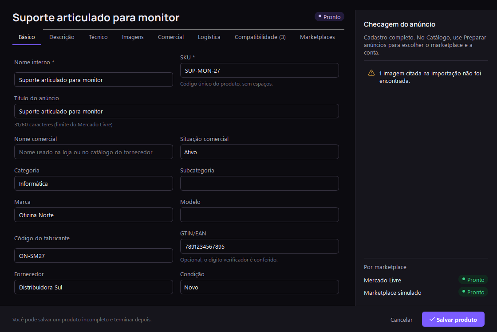

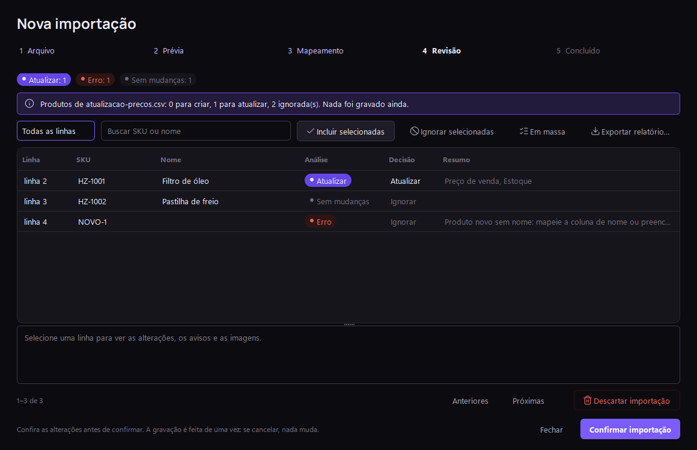

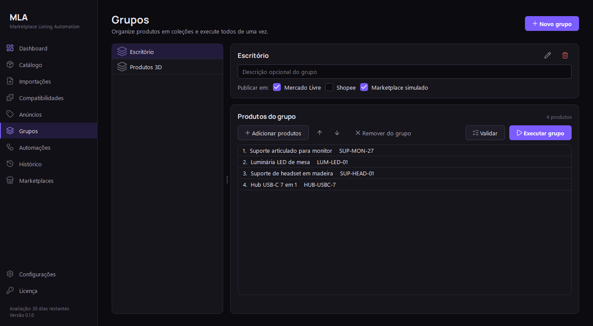

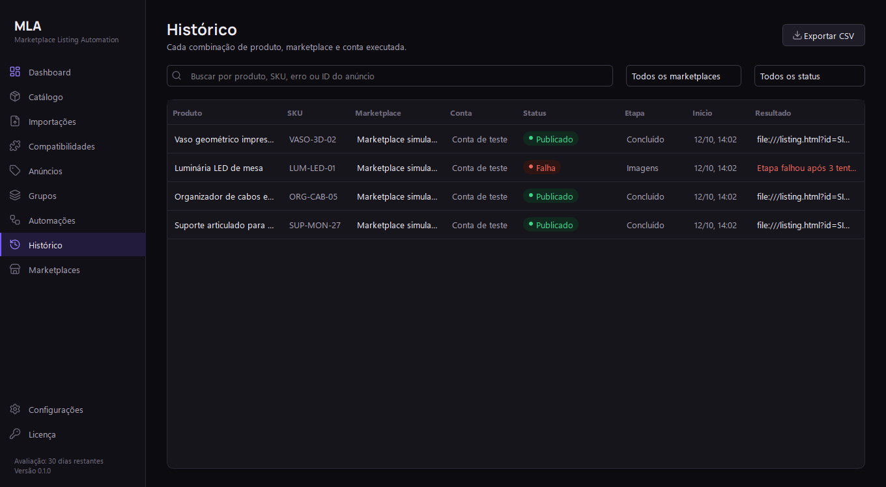

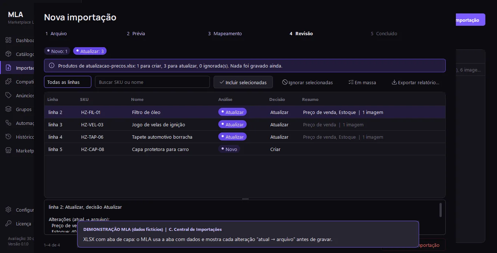

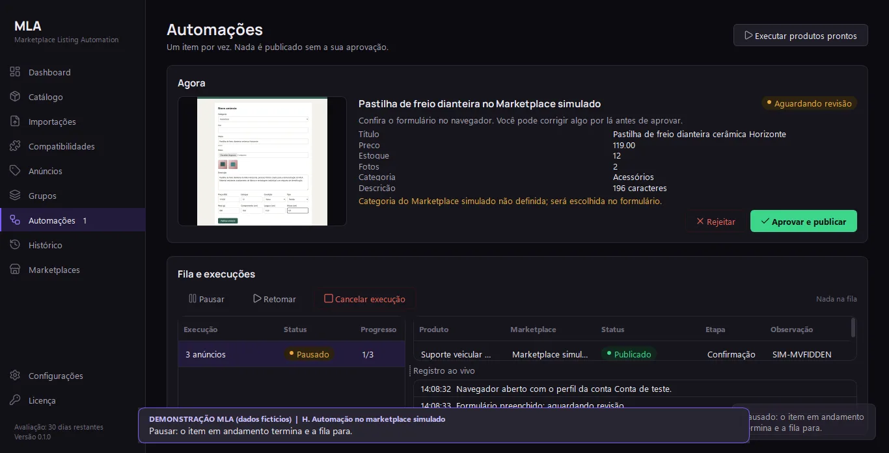

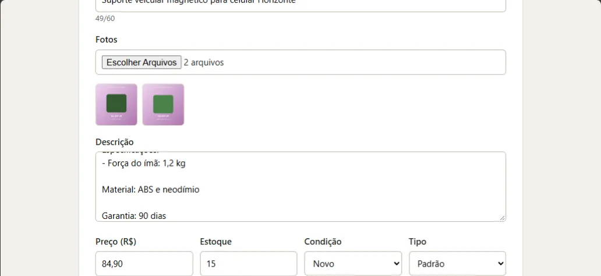

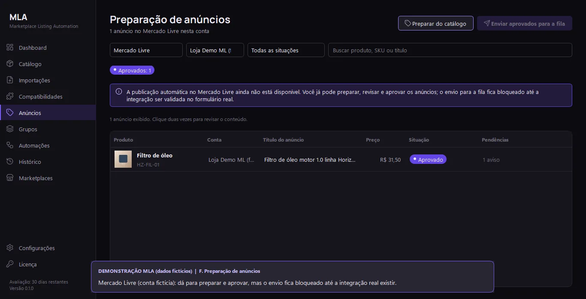
Arquitetura
Aplicativo desktop local: os dados ficam no computador do lojista.
Tecnologias
- Python 3.13
- PySide6
- SQLite
- Playwright
- Microsoft Edge
- openpyxl
- pypdf
- pytest
Em desenvolvimento e roadmap
O que ainda não está disponível aparece aqui, separado do que já funciona.
| Etapa | Situação |
|---|---|
| Base do app, catálogo, grupos, fila com revisão e marketplace simulado | Concluído |
| Catálogo mestre, Central de Importações, compatibilidades, preparação de anúncios e contas | Concluído |
| Demonstração visual completa e relatório de validação (19/10/2026) | Concluído |
| Segurança do navegador Edge: sandbox ativado nos perfis da automação | Próxima etapa |
| Correção do botão “Reexecutar” no Histórico | Próxima etapa |
| Validação rigorosa de preços no editor | Próxima etapa |
| Ajustes de responsividade do Dashboard | Próxima etapa |
| Melhorias na etapa de conclusão das importações | Próxima etapa |
| Testes de conexão real com marketplaces, mediante autorização do lojista | Planejado |
| Inspeção autorizada e publicação real no Mercado Livre; depois, Shopee | Planejado |
| Telas de regras por categoria, consentimento de IA e imagens por variação | Planejado |
| Instalador, licenças assinadas e teste em máquina limpa | Planejado |
| Inteligência de mercado com Scrapling (só onde permitido) e agentes de otimização com IA; hoje existe apenas a estrutura de dados, sem coleta nem IA ativa | Planejado |